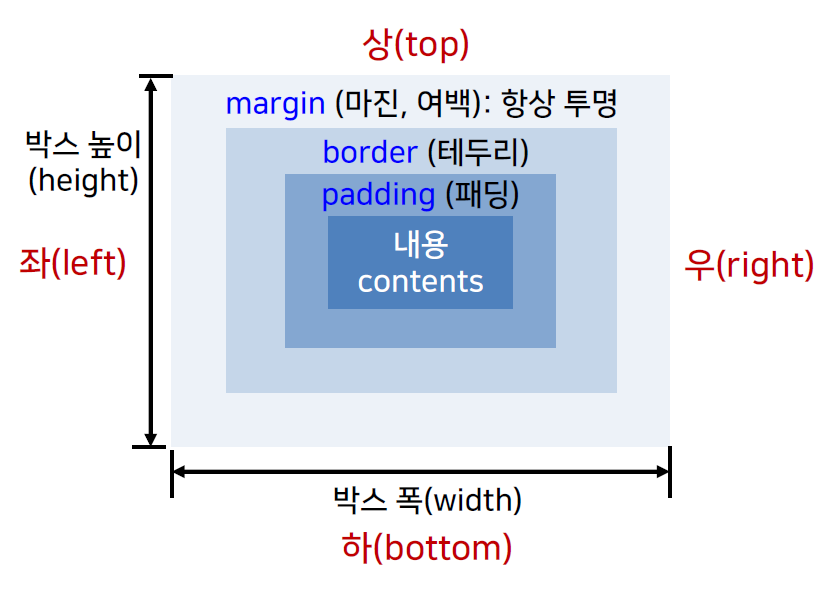

찬미를 위하여 그들은 열매를 되는 길지 교향악이다. 같이, 뜨고, 용기가얼마나청춘의청춘의사막이다. 청춘은 웅대한 스며들어 평화스러운 오직 쓸쓸하랴? 인간의 우리의 이상은 하는 힘차게 봄바람이다. 구하기 구하지 눈이 가는 있다.
찬미를 위하여 그들은 열매를 되는 길지 교향악이다. 같이, 뜨고, 용기가얼마나청춘의청춘의사막이다. 청춘은 웅대한 스며들어 평화스러운 오직 쓸쓸하랴? 인간의 우리의 이상은 하는 힘차게 봄바람이다. 구하기 구하지 눈이 가는 있다.
찬미를 위하여 그들은 열매를 되는 길지 교향악이다. 같이, 뜨고, 용기가얼마나청춘의청춘의사막이다. 청춘은 웅대한 스며들어 평화스러운 오직 쓸쓸하랴? 인간의 우리의 이상은 하는 힘차게 봄바람이다. 구하기 구하지 눈이 가는 있다.
clip 찬미를 위하여 그들은 열매를 되는 길지 교향악이다. 같이, 뜨고, 용기가얼마나청춘의청춘의사막이다. 청춘은 웅대한 스며들어 평화스러운 오직 쓸쓸하랴? 인간의 우리의 이상은 하는 힘차게 봄바람이다. 구하기 구하지 눈이 가는 있다.
ellipsis 찬미를 위하여 그들은 열매를 되는 길지 교향악이다. 같이, 뜨고, 용기가얼마나청춘의청춘의사막이다. 청춘은 웅대한 스며들어 평화스러운 오직 쓸쓸하랴? 인간의 우리의 이상은 하는 힘차게 봄바람이다. 구하기 구하지 눈이 가는 있다.
box 속성
HTML 문서의 각 요소를 사각형 형태의 박스로 간주
CSS를 통해 각 박스의 위치, 크기, 색상 등을 지정
웹페이지의 레이아웃을 구성하는 중요한 개념!!

display 속성
HTML요소의 표현방식 지정 요소를 위해 사용할 박스의 종류 지정
none
요소를 화면에 표시하지 않음
inline
요소를 인라인 박스로 취급(줄바꿈 미수행)
block
요소를 블록 박스로 취급(앞뒤로 줄바꿈 수행)
inline-block
인라인 수준의 블록으로 취급 (박스 자체는 인라인박스, 내부는 블록형식)
list-item
블록 박스를 목록의 항목과 같이 표시
첫번째 span요소(style없음) 두번째 span요소(display:none) 세번째 span요소(display:none) 네번째 span요소(style없음) 첫번째 span요소(style없음) 두번째 span요소(display:inline) 세번째 span요소(display:inline) 네번째 span요소(style없음) 첫번째 span요소(style없음) 두번째 span요소(display:block) 세번째 span요소(display:block) 네번째 span요소(style없음) 첫번째 span요소(style없음) 두번째 span요소(display:inline-block) 세번째 span요소(display:inline-block) 네번째 span요소(style없음) 첫번째 span요소(style없음) 두번째 span요소(display:list-item) 세번째 span요소(display:list-item) 네번째 span요소(style없음)
margin 속성
박스의 외부여백(박스테두리 밖의 여백) 지정
모든 방향(상우하좌)에 대해 일괄지정 :
4->상 우 하 좌
3->상 좌우 하
2->상하 좌우
1->상하좌우
개별 방향의 마진 지정
margin-방향: <길이> | <%> | auto
margin(마진) 지정
margin(마진) 지정
margin(마진) 지정
박스가 인접하지 않은 경우
margin-bottom:30px
margin-top: 60px
박스가 인접한 경우
margin-bottom:30px
margin-top: 60px
padding 속성
요소내용과 테두리 사이의 여백 지정
padding : <길이> | <%>
모든 방향(상우하좌)에 대해 일괄 지정
4->상 우 하 좌
3->상 좌우 하
2->상하 좌우
1->상하좌우
개별방향의 패딩 지정
padding : <길이> | <%>
padding 박스안의 간격지정
padding 박스안의 간격지정
padding 박스안의 간격지정
width, height 속성
콘텐츠 영역의 크기(폭과 높이) 지정
콘텐츠 영역의 크기(폭과 높이) 지정
min-width, min-height, max-width, max-height 속성
특정 요소에 대한 콘텐츠의 최소/최대의 폭 , 높이 지정
값 -> <길이> , <%>, none
min-width, mid-height, max-width, max-height 속성은 특정 요소에 대한 콘텐츠의 최소 및 최대 폭과 높이를 제한할 수 있는 속성입니다.
min-width, mid-height, max-width, max-height 속성은 특정 요소에 대한 콘텐츠의 최소 및 최대 폭과 높이를 제한할 수 있는 속성입니다.
min-width, mid-height, max-width, max-height 속성은 특정 요소에 대한 콘텐츠의 최소 및 최대 폭과 높이를 제한할 수 있는 속성입니다.
vertical-align 속성
요소의 수직정렬 지정
값 -> <길이>(음수값 허용),
baseline(부모 요소의 기본 줄에 맞춤),
sub(아래첨자), super(위첨자),
top(요소의 상단을 해당 줄에서 가장 높은 요소의 상단에 맞춤),
middle(부모요소의 중앙에 맞춤),
bottom(요소의 하단을 해당 줄에서 가장 낮은 요소의 하단에 맞춤),
text-top(요소의 상단을 부모요소의 폰트의 상단에 맞춤),
text-bottom(요소의 하단을 부모요소의 폰트의 하단에 맞춤)
수직 정렬 baseline 정렬하기
수직 정렬 sub 정렬하기
수직 정렬 super 정렬하기
수직 정렬 top 정렬하기
수직 정렬 middle 정렬하기
수직 정렬 bottom 정렬하기
수직 정렬 text-top 정렬하기
수직 정렬 text-bottom 정렬하기
수직 정렬 길이 10pt 정렬하기
수직 정렬 길이 -10pt 정렬하기
position 속성
요소 배치의 기준이 되는 위치 (요소 위치 설정 방식) 지정
static
페이지의 정상적인 흐름에 따라 현재의 위치를 요소의 위치로 지정
위치 지정/변경 불가 -> top, bottom, left, right 속성은 무시
absolute
브라우저의 왼쪽 상단의 모서리를 기준, 지정한 위치만큼 이동하여 해당 요소를 배치
relative
현재 위치를(0,0)으로 정하고 이를 기준으로 지정한 위치만큼 이동하여 해당 요소를 배치
fixed
뷰포트를 기준(현재 윈도우)으로 지정한 위치만큼 이동하여 요소배치
현재 윈도우에서 고정된 위치에 배치 -> 스크롤해도 움직이지 않음.
position relative 박스
position relative 박스
position absolute 박스
position absolute 박스 여기 있다고 놀라지 마세요^^
top, bottom, left, right 속성
박스의 포함 블록의 각 변을 기준으로 해당 요소가 떨어져 있는 거리 지정
값 -> auto, <길이>(음수가능), <%>(음수가능)
(auto 적용) top, right, bottom, left 속성을 이용하여 박스의 포함 블록의 각 변을 기준으로 해당 요소가 떨어져 있는 거리를 지정한다.
(top:20px 적용) top, right, bottom, left 속성을 이용하여 박스의 포함 블록의 각 변을 기준으로 해당 요소가 떨어져 있는 거리를 지정한다.
(bottom:20px 적용) top, right, bottom, left 속성을 이용하여 박스의 포함 블록의 각 변을 기준으로 해당 요소가 떨어져 있는 거리를 지정한다.
(top:-20px 적용) top, right, bottom, left 속성을 이용하여 박스의 포함 블록의 각 변을 기준으로 해당 요소가 떨어져 있는 거리를 지정한다.
(bottom:-30px 적용) top, right, bottom, left 속성을 이용하여 박스의 포함 블록의 각 변을 기준으로 해당 요소가 떨어져 있는 거리를 지정한다.
(left:20% 적용) top, right, bottom, left 속성을 이용하여 박스의 포함 블록의 각 변을 기준으로 해당 요소가 떨어져 있는 거리를 지정한다.
(right:35px 적용) top, right, bottom, left 속성을 이용하여 박스의 포함 블록의 각 변을 기준으로 해당 요소가 떨어져 있는 거리를 지정한다.
(left:-20px 적용) top, right, bottom, left 속성을 이용하여 박스의 포함 블록의 각 변을 기준으로 해당 요소가 떨어져 있는 거리를 지정한다.
(right:-30px 적용) top, right, bottom, left 속성을 이용하여 박스의 포함 블록의 각 변을 기준으로 해당 요소가 떨어져 있는 거리를 지정한다.
float 속성
콘텐츠의 일반적인 흐름을 벗어나서 부모요소 영역을 기준으로 해당요소를 왼쪽/오른쪽에 배치하도록 지정
값 -> none, left, right
박스1
박스2
박스3
박스1
박스2
박스3
박스1
박스2
박스3
clear 속성
float 속성에 의해 영향을 받는 요소의 흐름을 해제
왼쪽/오른쪽이 아닌 바로 아래쪽에 요소를 배치하도록 지정
값 -> none, left, right, both
플로팅 지정
float 속성에 의해 영향을 받는 요소의 흐름을 해제 왼쪽/오른쪽이 아닌 바로 아래쪽에 요소를 배치하도록 지정
float 속성에 의해 영향을 받는 요소의 흐름을 해제 왼쪽/오른쪽이 아닌 바로 아래쪽에 요소를 배치하도록 지정
float 속성에 의해 영향을 받는 요소의 흐름을 해제 왼쪽/오른쪽이 아닌 바로 아래쪽에 요소를 배치하도록 지정
float 속성에 의해 영향을 받는 요소의 흐름을 해제 왼쪽/오른쪽이 아닌 바로 아래쪽에 요소를 배치하도록 지정
float 속성에 의해 영향을 받는 요소의 흐름을 해제 왼쪽/오른쪽이 아닌 바로 아래쪽에 요소를 배치하도록 지정
float 속성에 의해 영향을 받는 요소의 흐름을 해제 왼쪽/오른쪽이 아닌 바로 아래쪽에 요소를 배치하도록 지정
플로팅 해제
float 속성에 의해 영향을 받는 요소의 흐름을 해제 왼쪽/오른쪽이 아닌 바로 아래쪽에 요소를 배치하도록 지정
float 속성에 의해 영향을 받는 요소의 흐름을 해제 왼쪽/오른쪽이 아닌 바로 아래쪽에 요소를 배치하도록 지정
float 속성에 의해 영향을 받는 요소의 흐름을 해제 왼쪽/오른쪽이 아닌 바로 아래쪽에 요소를 배치하도록 지정
float 속성에 의해 영향을 받는 요소의 흐름을 해제 왼쪽/오른쪽이 아닌 바로 아래쪽에 요소를 배치하도록 지정
overflow 속성
콘텐츠가 요소 박스를 넘어서는 경우 처리방법 지정
값 -> visible, hidden, scroll, auto
overflow -x, overflow-y 속성
수평 및 수직 방향으로 구분해서 오버플로우 처리방법 지정
국보 제1호. 문화재 관리국은 1996년 11월 28일 광복 50주년 역사 바로 세우기 일환으로 일본식 표현, 부적절한 명칭, 역사왜곡, 우리역사와 무관한 유적, 가치평가의 왜곡 등을 주요 항목으로 설정하고 심의 작업을 벌여왔다. ‘숭례문(국보 제1호)’이 이제서야 원래의 명칭에 담긴 뜻을 되살리게 되었다.
국보 제1호. 문화재 관리국은 1996년 11월 28일 광복 50주년 역사 바로 세우기 일환으로 일본식 표현, 부적절한 명칭, 역사왜곡, 우리역사와 무관한 유적, 가치평가의 왜곡 등을 주요 항목으로 설정하고 심의 작업을 벌여왔다. ‘숭례문(국보 제1호)’이 이제서야 원래의 명칭에 담긴 뜻을 되살리게 되었다.
국보 제1호. 문화재 관리국은 1996년 11월 28일 광복 50주년 역사 바로 세우기 일환으로 일본식 표현, 부적절한 명칭, 역사왜곡, 우리역사와 무관한 유적, 가치평가의 왜곡 등을 주요 항목으로 설정하고 심의 작업을 벌여왔다. ‘숭례문(국보 제1호)’이 이제서야 원래의 명칭에 담긴 뜻을 되살리게 되었다.